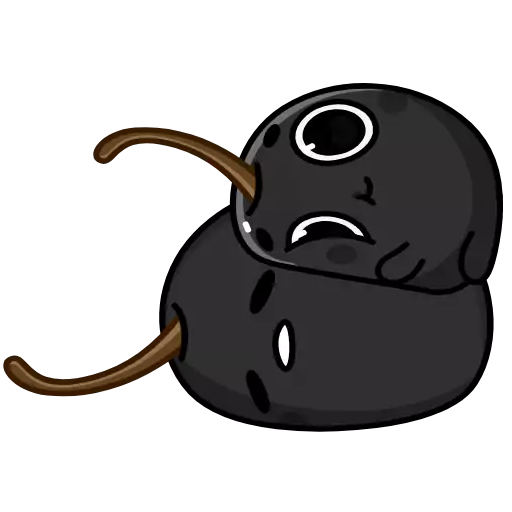

Мне 22. Я преподаю английский вот уже 5 лет (во время учебы на преподавателя англа уже преподавала по-тихоньку).
19 Лет в Перми; 2 года в Москве; 8 месяцев в Сочи; 6 месяцев на Бали (now: Bali)
А еще, я спортсменка с 8ью годами стажа в скалолазании.
Мне нравится читать про психологию и фэнтази.
Я обожаю мангу и аниме, и переодически пытаюсь учить японский.
Обо мне 2.0

Я обожаю cuddle-party (обнимательные вечеринки). И организую их везде, где живу (Бали, Пермь, Москва, Сочи)
Я очень быстро монетизирую любые свои хобби (бижутерия ручной работы, обнимательные вечеринки, тренерство по растяжке/скалолазанию, вообще все что делаю). Просто так еще веселее и азартнее. Но основной мой доход все равно всегда с англа.